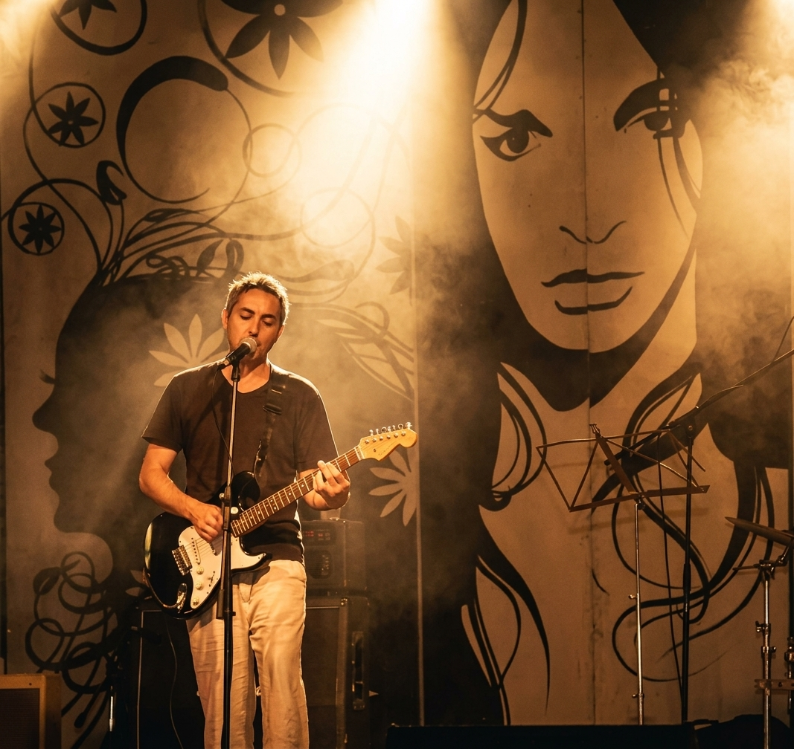
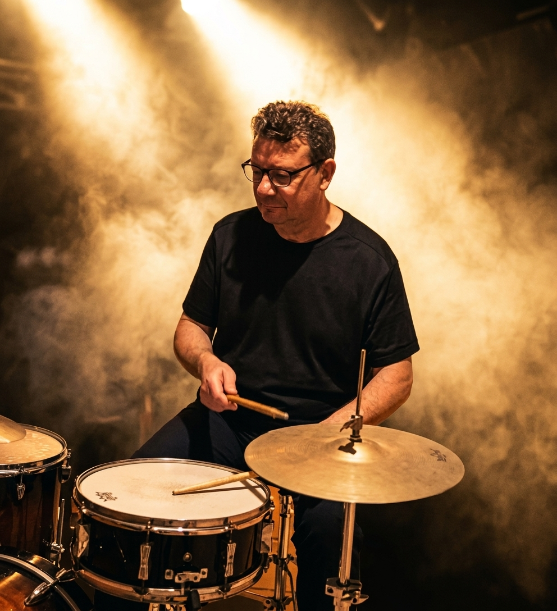

KAWA – Il rock e il blues, senza confini
Chi siamo
I Kawa sono una band rock napoletana che fa della libertà espressiva, della ricerca musicale e della contaminazione artistica i tratti distintivi della propria identità.
Il loro progetto nasce dalla passione per il rock e dalla volontà di reinterpretarlo in maniera personale, dando vita a un linguaggio musicale che attraversa il rock alternativo, il pop e le atmosfere psichedeliche. Una musica che non si limita a riproporre sonorità conosciute, ma cerca di trasformarle, rielaborarle e farle proprie.
La band immagina e costruisce un rock italiano capace di unire energia, melodia, sperimentazione e sensibilità compositiva, mantenendo sempre un legame profondo con le proprie radici napoletane.
Tre musicisti, tre voci complementari: chitarra, basso e batteria si incontrano per dare corpo ad una forte identità sonora.

Nando Amatore
Chitarra
Luca Montemagno
Basso

Maurizio Rania
Batteria
La musica come espressione e racconto
Per i Kawa la musica è anche uno strumento per raccontare il mondo, la società, la memoria e le emozioni.
La loro produzione comprende brani originali che affrontano argomenti differenti: dalle suggestioni personali e sentimentali alle tematiche storiche e sociali, passando per omaggi alla cultura popolare e alla tradizione musicale.
Poesia, arte e cultura
L'identità dei Kawa non si esaurisce nella dimensione strettamente musicale. Il progetto artistico si apre alla poesia, alla letteratura, alla filosofia, al cinema e alle diverse forme di espressione culturale. Nel loro universo creativo trovano spazio testi poetici, aforismi, riflessioni e suggestioni che dialogano con la musica e ne ampliano il significato.
I Kawa dal vivo
La dimensione live rappresenta il momento in cui la ricerca musicale della band incontra direttamente il pubblico. Sul palco, il linguaggio rock dei Kawa prende forma attraverso l'energia degli strumenti, le dinamiche musicali e le diverse atmosfere che caratterizzano le loro composizioni. Il repertorio può spaziare dalle produzioni originali alle reinterpretazioni, mantenendo al centro la personalità musicale del gruppo e la volontà di offrire un'esperienza che non sia una semplice riproduzione di brani, ma una vera espressione artistica.
La filosofia Kawa
I Kawa credono in una musica libera, capace di attraversare generi, epoche e culture senza essere prigioniera di definizioni. Il rock rappresenta il loro punto di partenza, ma non il loro limite. Ogni composizione è un'occasione per esplorare nuove sonorità, raccontare una storia, esprimere un'emozione o dare voce a una riflessione. Perché la musica, per i Kawa, non è soltanto intrattenimento: è cultura, memoria, ricerca e soprattutto libertà di espressione.
KAWA. Il rock e il blues, immaginati e suonati senza confini.